$YC-Bench$: Benchmarking AI Agents for Long-Term Planning and Consistent Execution
YC-Bench：面向长期规划与一致执行的 AI Agent 基准评测
简介
论文针对现有 Agent 基准难以检验长时程战略一致性的问题，提出 YC-Bench：让 Agent 在部分可观测的模拟环境中经营一家初创公司一年（数百轮），通过 CLI 工具选择任务合同、分配员工、管理现金流，并应对约三分之一会蓄意让任务失败的对抗性客户。环境将对话历史截断至最近 20 轮，迫使 Agent 依赖可持久化并注入 system prompt 的 scratchpad 作为唯一跨截断记忆机制。对 12 个模型各 3 个种子的评测显示，仅 Claude Opus 4.6、GLM-5、GPT-5.4 稳定超过 $200K 起始资金，其中 Opus 4.6 平均最终资金 $1.27M 最高，GLM-5 以 11 倍更低推理成本达到 $1.21M。Scratchpad 使用是成功的最强预测因子，对抗客户识别占 47% 的破产；错误分析揭示 reasoning-execution gap、aware inaction 等失败谱系，表明长时程一致性是 perceive→record→retrieve→act 的流水线能力，当前模型在不同环节失守。
问题
现有 LLM Agent 基准（如 Vending-Bench、PlanBench、SWE-bench）要么环境反馈即时、后果不复利，要么任务是独立有界的，无法检验 Agent 在数百轮交互中保持战略一致性的能力：在不确定下规划、从延迟反馈中学习、识别并规避对抗性客户、避免早期错误经复利放大导致破产。
方法
将经营初创公司形式化为 POMDP，构建确定性、部分可观测的业务模拟环境：Agent 通过 CLI 命令在一年模拟时程内从市场接受任务、按领域技能分配固定员工、管理月度薪资、客户信任与声望等复利动态；约三分之一客户为对抗性（接受任务后工作量被暗中膨胀），身份只能从历史失败模式推断。对话历史截断至最近 20 轮，Agent 唯一的跨截断记忆机制是可写入并注入 system prompt 的持久化 scratchpad。以年末最终资金为单一标量指标，并附上下文窗口大小 K 的消融实验与工具调用行为统计。
关键结果
12 个模型（各 3 seeds，共 36 次运行）中仅 3 个（Claude Opus 4.6、GLM-5、GPT-5.4）平均最终资金超过 $1,000,000，为次优模型的 2-3 倍；仅 5 个模型盈利，7 个低于 $200K 起始资金，部分在至少一个 seed 破产
Claude Opus 4.6 平均最终资金最高（$1.27M，0/3 破产）；GLM-5 达 $1.21M 且推理成本低 11 倍
Scratchpad 使用是成功的最强单一预测因子；对抗客户识别是主要失败模式，占 47% 的破产
三个顶级模型接受对抗任务的比例约为次优模型的 1/4；三分之二的运行从未在策略中提及黑名单对抗客户，仅 4/10 模型在 6/30 次运行中显式维护客户白名单
成本效益方面 Kimi-K2.5 最优，比次优的 Gemini-3-Flash 高 2.5 倍；三个顶级模型成本效益显著落后
上下文窗口消融：4 个模型中 3 个在 K=30 达到峰值（GPT-5.4 Mini 提升 123%，Gemini 3 Flash 提升 27%），GPT-5.4 在默认 K=20 最佳（K=30 时任务吞吐量下降超 60%）；所有模型超过各自最优 K 后性能下降
模型间资金分化在约 60 天（2-3 月）出现；顶级模型早期聚焦一两个客户触发信任雪球，每次成功最多减少 50% 的未来任务工作量
失败归因示例：Claude Sonnet 4.6 的 17 个失败任务中 41% 源于人员不足、18% 源于员工-领域错配、12% 源于重复接受对抗客户
创新点
相对最直接的灵感来源 Vending-Bench，引入多领域任务分配、隐藏的员工领域技能率（信息不对称谜题）、复利财务动态（声望衰减、薪资随完成单调增长）与多 episode 学习框架，且对抗者身份需从历史失败中推断而非事先可知；相对 AgentBench、SWE-bench、GAIA、TheAgentCompany 等，YC-Bench 专门检验数百轮复利决策下的持续战略一致性而非单任务成败；环境确定性、开源可配置、免疫预训练污染。
团队参考意义
相关度级别：high
命中能力域：3.1 上下文工程与记忆 | 3.3 Agent 架构与工具使用 | 3.5 评测与可靠使用
理由：直接命中团队三个能力域。3.1：论文核心机制之一是 scratchpad 作为跨上下文截断的持久记忆（注入 system prompt），并证明'是否持续记录与更新关键信息'是成功的最强预测因子；K 值消融进一步表明盲目增大上下文窗口反而降低每轮行动效率，为上下文窗口管理与记忆策略提供直接实证。3.3：单 Agent 通过 CLI 工具循环执行数百轮长任务，错误分析给出 over-parallelization、reasoning-execution gap、aware inaction 等单 Agent 执行可靠性失败模式分类，以及工具调用行为（inspect/accept 比、每轮命令数）与成败的关联。3.5：这是一个长时程 Agent 评测基准，其'每美元 API 成本产出'的成本效益分析可直接用于生产模型选型，其基准设计思想（复利后果、部分可观测、对抗性输入、单一标量终局指标）可借鉴到团队内部评测体系。
建议动作：深入精读并做内部分享
中文全文
arXiv:2604.01212v1 [cs.CL] 1 Apr 2026
YC-Bench : Benchmarking AI Agents for Long-Term Planning and Consistent Execution
1 Introduction
基于大语言模型（LLM）的 Agent 在与环境交互和使用工具方面的能力日益增强。由于任务可能涉及 100 次以上的工具调用，Agent 知道如何进行良好的规划至关重要。因此，越来越多的研究工作聚焦于规划，例如 PlanBench (Valmeekam et al., 2023) 和 BALROG (Paglieri et al., 2025)。长程规划中显现出的一个关键属性是一致性（coherence）：在数百甚至数千次交互/步骤的过程中，Agent 必须始终与其目标保持一致，保留来自其过去的关键事实或知识，并避免陷入重复性或幻觉式的行为。
诸如 Vending-Bench (VB) (Backlund & Petersson, 2025) 和 Vending-Bench 2 等现有工作，旨在测试前沿模型维持长期一致性的能力。这些工作在揭示前沿模型中有趣的规划失效模式与行为方面取得了有意义的进展，例如“崩溃”（meltdown）式循环、对不存在事实的幻觉，甚至发出法律威胁。这些基准测试环境还包含真实世界的随机性，例如错过交付和不满意的客户。然而，其环境属性会产生即时且切实的影响。例如，如果在其中定价设置错误，Agent 会在第二天观察到销量下滑。而在真实世界的场景中，经营一门生意意味着在无法立即知晓确切结果的情况下承担经过权衡的风险，并且需要采取短期内并非最优的行动，以期获得更好的长程回报。此外，如果当前策略存在缺陷且无法带来最大利润，企业必须基于经验加以改进，并适应不断变化的市场格局。
* 表示同等贡献
为填补这一空白，我们提出了 YC-Bench，这是一个长期一致性（long-term coherence）基准测试（benchmark），用于评估大语言模型（LLM）agent 在跨越数百轮交互、为期一年的时间跨度内运营一家模拟初创公司的能力。该 agent 通过命令行界面（CLI）工具接口进行操作，每一轮决定从市场中接受哪些合同、根据各自的技能档案指派哪些员工，以及如何管理现金流以应对每月循环出现的工资支出。我们的环境是对抗性的：大约三分之一的客户不可信，其任务被设计为注定失败。agent 必须学会通过分析自身的成功与失败历史来识别这些客户，并在之后避开他们。这是与 VB 的另一个关键区别：在 VB 中，对手在做出承诺之前就是已知的（例如对抗性供应商）。该基准测试通过一个 20 轮的上下文窗口来考察长期一致性，这迫使 agent 使用持久化的草稿板（scratchpad）作为记忆：那些未能记录下哪些客户具有对抗性的 agent，在其对话历史被截断后将会重复代价高昂的错误。累积动态（compounding dynamics）会奖励持续的良好决策——与回头客户之间的信任会不断建立，从而减少未来的工作量；而对任务过度配置人员则会随时间推移推高工资成本。性能以年终时的公司最终资金来衡量，这一单一标量反映了围绕任务选择、资源分配和风险管理所做出的数百个顺序决策的累积影响。我们的贡献可以总结如下：
总而言之，我们提出了 YC-Bench，这是一个长期一致性基准测试，用于评估 agent 模拟运营一家初创公司的能力。具体而言，我们的基准测试考察 agent 在不确定条件下于复杂组织中分配资源、管理风险，以及在长时间跨度内适应对抗性动态的能力。
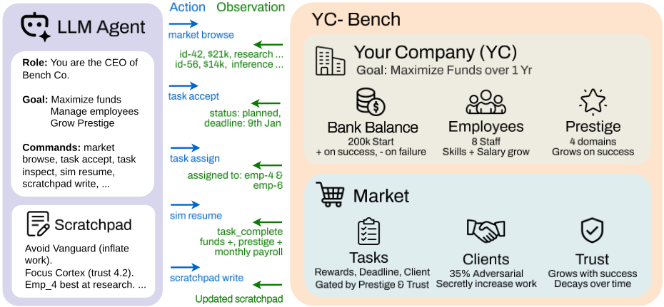
2 Related Work
YC-Bench 位于多个活跃研究领域的交汇处：大语言模型（LLM）agent 基准测试、长程规划、基于仿真的评估、工具调用以及记忆架构。
LLM Agent 基准测试。LLM 的 agentic 能力迅速增长，催生了丰富的基准测试生态。AgentBench（Liu et al., 2024）在八个不同的环境中评估 LLM，其中包括操作系统和游戏；并发现薄弱的长期推理能力是开源模型的主要瓶颈。SWEbench（Jimenez et al., 2024）将评估建立在真实的 GitHub issue 之上，要求 agent 在代码库中导航并生成正确的补丁；然而，每个任务都是独立的、有边界的问题，而非持续性的序列过程。GAIA（Mialon et al., 2024）通过 466 个需要工具调用和多模态推理的真实世界问题来测试通用助手能力。AgentBoard（Ma et al., 2024）提出了“进展率”（Progress Rate）指标，用以刻画渐进式进展而非二元化的成功，这一设计理念与 YC-Bench 相同——YC-Bench 追踪的是收入轨迹与声望进展，而非通过/失败式的结果。TheAgentCompany（Xu et al., 2024）将 agent 作为数字员工嵌入一家模拟的软件公司，发现表现最好的 agent 也只能完成 30% 的专业任务。两者都与 YC-Bench 一样强调扎根于具体领域、后果重大的决策制定，但均未评估 YC-Bench 所要求的那种在数百个影响不断复合累积的回合中保持持续战略一致性的能力。
长程规划与推理。要在 YC-Bench 上取得有效表现，agent 需要在数百个回合中保持战略一致性，这一能力超出了大多数现有工作所测试的时间跨度。PlanBench（Valmeekam et al., 2023）在经典规划领域（Blocksworld、Logistics）上评估 LLM，发现即使是前沿模型在规划生成与验证方面也表现远远不足，这为“表面上的规划能力可能只是检索而非真正的推理”提供了证据；而 YC-Bench 新颖的仿真环境不受预训练数据污染的影响，恰好适合检验这一区别。BALROG（Paglieri et al., 2025）也与之密切相关，它在六个程序化生成的游戏环境中评估 LLM，这些环境涵盖了从简单到极具挑战性的序列任务。其关键发现——当前的前沿模型在更长程的任务上仍然存在显著困难——直接促成了 YC-Bench 对持续性决策制定的关注。
与我们的工作最直接相关的是 Vending Bench (VB) (Backlund & Petersson, 2025)，它为 YC-Bench 提供了关键灵感。VB 测试大语言模型（LLM）智能体在经营一家模拟自动售货机生意时能否保持连贯的行为，并发现所有模型都会表现出失败循环，且极少能从中恢复。YC-Bench 通过引入多领域任务分配、会制造信息不对称谜题的隐藏员工技能率、复合累积的财务动态（声望衰减、薪资增长），以及检验智能体能否在多次重启间持续改进的多回合学习框架，对这一范式进行了大幅扩展。YC-Bench 的独特之处在于其确定性的商业模拟设定，以及其作为开源、可扩展且可配置的基准测试的地位。
模拟环境与策略博弈。YC-Bench 属于日益壮大的基于模拟的基准测试家族，这类基准测试在复杂的多轮环境中检验 AI 的决策能力。Generative Agents (Park et al., 2023) 提出了由 LLM 驱动的智能体，在沙盒中模拟可信的人类行为，利用记忆存储、反思和动态检索来进行规划；其持久化智能体记忆架构直接启发了 YC-Bench 在回合之间基于草稿板（scratchpad）的记忆延续机制。Cicero (FAIR) 证明了 LLM 能够在 Diplomacy 游戏中处理不完全信息下的谈判与长期规划，这些能力与 YC-Bench 信息不对称设定中所检验的能力类似——在该设定中，智能体必须从任务结果中推断隐藏的员工技能率。CivRealm (Qi et al., 2024) 提供了一个基于 Civilization 的基准测试，要求在较长的时间跨度内进行资源管理和外交，但基于强化学习（RL）和 LLM 的智能体都难以应对完整游戏的复杂性，这也促使了诸如 YC-Bench 这类基准测试的出现，它们在受控的确定性环境中隔离出战略决策的特定方面。
3 YC-Bench
员工与生产力。公司拥有一份固定的员工名册，不能雇用或解雇员工。每位员工都有一个分领域的生产力水平，即其在该领域每小时完成的工作量。智能体可以通过 employee list 直接查询生产力水平。每位员工还有一个反映其平均生产力的级别标签（初级、中级或高级），但生产力分布呈尖峰状：一名高级别员工在培训领域可能拥有高级别的产出，而在研究领域却只有初级别的产出。因此，有效的员工分配要求智能体根据员工在特定领域的优势将其匹配到相应任务，而不是仅依赖级别标签。任务成功完成后，被指派的员工会获得一次生产力提升（productivity boost），即其在任务所属领域的生产力按百分比增加，且提升比率设有上限。这使得员工的生产力随时间推移不断提高，从而奖励持续的领域专业化分配。然而，每次任务完成还会触发一次 salary bump，即基于员工级别的固定加薪。因此，月度工资支出随已完成任务数量的增加而单调增长，这带来了优先处理高回报任务的压力，以使收益增长超过不断上升的成本。
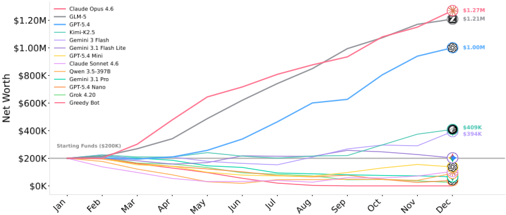
Do models complete tasks that require trust?
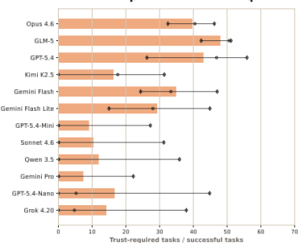
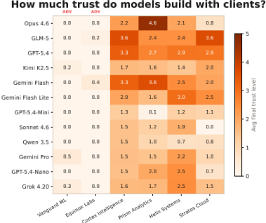
客户（Clients）。每项任务由若干客户中的某一个发布。Agent 通过成功完成某客户的任务来与其建立信任；信任度越高，该客户未来任务所需的工作量就越少，并会解锁更高层级的任务。然而，为某一客户完成一项任务会轻微降低所有其他客户的信任度，因此 Agent 必须选择将精力投资于哪些客户关系。
对抗性客户（Adversarial clients）。其中一部分客户是对抗性的：在 Agent 接受其某项任务之后，环境会虚增工作量，使得截止期限几乎不可能达成。对抗性状态是隐藏的，且永远不会被直接揭示。至关重要的是，对抗性客户会提供具有竞争力的高额报酬，因此 Agent 无法简单地按价格进行筛选。Agent 必须转而从反复任务失败的模式中推断哪些客户是对抗性的。
观测（Observations）。在每个回合开始时，Agent 会收到一份结构化的状态摘要，其中包含当前时间戳、资金、月度工资支出、资金跑道估计、活跃任务数量，以及自上一回合以来的事件列表（任务完成、资金变动、salary bump、截止期限余量）。所有其他状态信息（员工技能等级、市场任务、客户信任度、每项任务的进度）都必须通过 observe 动作主动查询。关键的隐藏量是客户可靠性等级，必须从任务结果的模式中推断出来。
仿真时钟（Simulation Clock）。Agent 显式地控制仿真时间的推进。调用 sim resume 会将时钟推进到下一个计划事件，通常是任务检查点（完成 25%、50%、75% 或 100%）、一次月度工资扣除，或时间范围的终点。在事件之间，Agent 可以发出任意多的动作，以重新评估策略、接受新任务或重新分配员工。工作仅在工作时间（工作日）内推进，工资在每月的第一个工作日扣除。
记忆（Memory）。Agent 的对话历史会被截断为最近的 K 个回合（我们在实验中使用 K =20）。为了保持长期一致性，Agent 可以写入一个持久化的 scratchpad，该 scratchpad 会在每个回合被注入系统提示（system prompt）中。scratchpad 是 Agent 在上下文截断后保留信息的唯一机制，例如记录哪些客户不可靠、哪些员工在哪些领域最强，或从过去表现中得出的策略规则。这一设计并不偏向任何特定的记忆策略；相反，它测试的是 Agent 能否自主判断哪些信息值得持久保存。
4.1 Experimental Setup
模型 我们评估了来自七个提供商的 12 个模型：GPT-5.4、GPT-5.4-Mini 和 GPT-5.4-Nano（OpenAI）；Claude Opus 4.6 和 Claude Sonnet 4.6（Anthropic）；Gemini 3.1 Pro、Gemini 3 Flash 和 Gemini 3.1 Flash Lite（Google）；Qwen 3.5-397B（Alibaba）；GLM-5（Zhipu AI）；Kimi-K2.5（Moonshot AI）；以及 Grok 4.20（xAI）。每个模型在默认预设下使用 3 个随机种子进行评估，共计 36 次 LLM 运行。我们使用 LiteLLM 框架进行推理，并使用 OpenRouter 作为模型提供商。完整的配置超参数列于附录 B，Agent 的系统提示（system prompt）见附录 C。
基线 我们与一个贪心基线（greedy baseline）进行比较，该基线在每个回合中接受市场上可获得的奖励最高的任务，将所有员工分配到该任务上，并推进仿真时钟。该基线不检查客户历史，不按领域对员工进行专业化分工，也不使用 scratchpad。基于 LLM 的 Agent 应能够通过从非对抗性客户中智能地选择合适的任务，并为该任务选择正确的员工，从而在长期内超越贪心基线。
4.2 Main Results
YC-Bench reveals large performance gaps between frontier models that score similarly on standard benchmarks. As shown in Figure 1, of the twelve models evaluated, only three (Claude Opus 4.6, GLM-5, and GPT-5.4) exceed $1,000,000 in average final funds, 2-3 × higher than the next-best model. Only five models turn a profit on average; the remaining seven finish below their $200,000 starting capital, and several go bankrupt in at least one seed. Figure 1 shows that the divergence emerges by February-March, roughly 60 days into the simulation. Top models concentrate on one or two clients early, triggering a trust snowball: each success reduces future task workloads (up to 50%), enabling more completions per month, which builds further trust. Models that spread work across many clients never reach meaningful work reduction and enter a payroll-driven decline.
Only a few models can stick to improving client trust in the long term; most models choose clients indiscriminately. Figure 3a shows the ratio of completed tasks that require the model to gain non-zero trust level with the client that issues the task. A model is motivated to choose tasks that require trust if they are accessible because they come with both higher rewards and smaller workloads. Despite the clear motivation to selectively focus on a particular subset of clients, most models do not build trust consistently with clients. This is seen in Figure 3a, where we see most models maintain a minimal trust level (1-2) with most clients, barring themselves from access to tasks with higher returns. Analysis of the model scratchpads in Figure 4b shows that only 4 out of 10 models across 6 out of 30 runs explicitly maintain a "whitelist" of clients to work with. The rest of the runs distribute tasks among clients discriminately: 'Avoid only' shows that the model only maintains a list of clients not to work with; 'Select + Avoid' shows that the model in addition maintains a list of clients to focus on; 'No policy' means no list is maintained.
Identifying adversarial clients in the market remains a challenge for all but a few models. Figure 4a computes the average ratio of adversarial client tasks in all tasks accepted by each model across seeds. Half of all the models accept adversarial tasks at a rate higher than the natural market share of those tasks, showing that these models either are
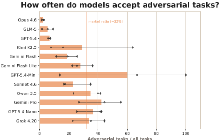
Adversarial tasks / all tasks
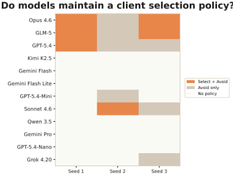
Figure 4 Analyzing how the models deal with adversarial clients, who have appealing rewards when accepting a task but have a lot more work than claimed (scope creep).
6
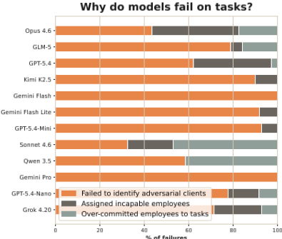
% of failures
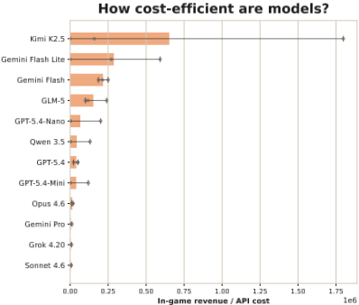
indifferent to the adversarial clients or come to prefer them over good clients by misjudgment. As shown in Figure 4b, two-thirds of all runs make no mention of 'blacklisting' any adversarial client in their strategy, leading them to choose clients indiscriminately.
然而，如图 4a 同时揭示的那样，三个表现最好的模型平均而言策略性地接受对抗性任务的频率显著低于基线，其接受率仅为次优模型的 1/4。正如 scratchpad 所揭示的，表现最好的模型在接受这些有问题的任务之前和之后都能正确察觉工作量的增加，并随后写下明确的准则，规定绝不接受来自这些客户的任务。尽管在遵循这些准则时偶尔出现不一致，这些指令仍有效防止了由这些对抗性任务导致的过多任务失败。
即使是表现最好的模型，仍会受到次优员工分配决策所带来后果的影响。图 5a 按失败原因对每个模型在多次运行中的所有失败任务进行了分解。尽管从设计上讲，未能识别出对抗性客户仍是最常见的陷阱，但 11 个模型中有 7 个模型的相当一部分失败归因于次优的员工分配。具体而言，它们要么分配了生产力在理论上根本无法及时完成任务的员工，要么将员工的精力分散到多个任务上，导致其在每个任务上的吞吐量无法满足最低要求。当模型为任务分配员工时，它拥有完全信息，即了解每个任务的工作量以及员工在相关领域上的生产力。因此，这些失败源于未能正确估计相对于截止日期的完成速度，以及未考虑到同时处理多个任务会拖慢每个员工速度这一事实。
各模型在成本效率上差异巨大，表现中等的模型（如 Kimi-K2.5）在成本与收益之间取得了优于表现最好模型的平衡。图 5b 计算了每个模型每花费一美元 API 成本所能产生的游戏内收益（以百万美元计）。Kimi-K2.5 的表现优于所有其他模型，与性价比次高的模型 Gemini-3-Flash 相比存在 2.5× 的性能差距。三个表现最好的模型在性价比方面显著落后，尤其是最强的模型 Claude-Opus-4.6，尽管其收益达到了最具性价比模型的 3×。这一排名对实际生产具有参考价值，因为它表明在将推理成本考虑在内时，每个模型能带来多少实际收益。关于 token 使用量、时间和成本的汇总统计，请参见附录 F。
5 Error Analysis
我们分析了四个模型，以理解其性能背后的行为机制，重点关注它们的错误模式。括号中的内容为（最终收入，破产次数）。
7
Claude Opus 4.6（平均 $1.27M，0/3 破产）。Opus 积极使用草稿板（scratchpad）来制定策略，每次运行中重写约 34 次，涉及四个主题：根据观察到的任务完成情况校准环境机制、遵循一次只处理一个任务的工作流、建立客户黑名单，以及跟踪每个客户的成功率以优化信任门控的任务选择。这些主题以一致的顺序出现：校准主导了前约 10 个回合，工作流规则在约第 20 回合时固化，对抗性客户在约第 25 回合前被标记，而基于信任的优化则持续到运行结束。它还在接受每个任务之前进行检查（每次运行约 155 次调用）。尽管如此，Opus 并非完美无缺：在 Seed 2（$750K）中，它在八月接受了一个来自黑名单客户的任务，并在后半段累积了 9 次合理失败，因为更高声望的任务被证明更难完成。
Gemini 3 Flash（平均 $394K，0/3 破产）。Flash 每次运行平均只有 2 条 scratchpad 记录，很少检查任务，并且每个回合都执行完全相同的 4 条命令循环：accept、assign 全部 8 名员工、dispatch、resume。这种缺乏适应性的做法代价高昂：Flash 在整个运行过程中接受了 12 个对抗性任务，全部失败，使其收益被限制在远低于顶尖梯队的水平。其 0/3 的破产率反映的是其吞吐量足以吸收这些损失，而非具备避免这些损失的能力。
Claude Sonnet 4.6（平均 $103K，2/3 破产）。Sonnet 表现出推理-执行差距（reasoning-execution gap）：它能推导出正确的策略，却未能付诸行动。在 Seed 1 的第 7 回合，它向 scratchpad 写入了正确的可行性公式（“required_qty / total_rate 必须小于 deadline hours”）以及“一次只做一个任务”的规则。但随后它对两者都置之不理：第 8 回合未经检查便接受了四个任务，且在整个运行期间平均并发活跃任务数为 7.23 个（最多 16 个）。在其 17 个失败任务中，41% 源于人手不足（若分配全部 8 名员工本可成功的任务），18% 源于分配的员工与任务领域匹配度差，12% 源于重新接受对抗性客户却从未在 scratchpad 中记录这一模式。Sonnet 每次运行平均有 8 条 scratchpad 记录，但很早就停止更新，导致其中留有陈旧的财务数据（$152K），而实际余额已降至 -$3K。
Grok 4.20（平均 $14K，2/3 破产）。Grok 表现出“有意识的无所作为”（aware inaction）：其 scratchpad 准确识别出关键问题（"Runway down to 1 month"、"Avoid Equinox"），但这些观察并未转化为行为的改变：在仅剩 6 天 runway 的情况下，它仍接受了来自 Vanguard ML（历史成功率为 0%）的任务。它同样没有管理自己的活跃任务组合：一个在 3 月接受的任务被搁置了 81 天，既未完成也未取消，直至破产。Grok 平均每轮仅执行 0.92 条命令，是所有被评估模型中最低的（表 3），这表明它把大部分轮次花在观察与斟酌上，而非任务执行。
总体而言，这四种失败画像揭示出一个长期不连贯性的谱系。Flash 因完全缺乏反思而彻底失败。Grok 尽管反思准确却仍然失败，无法在诊断与行动之间形成闭环。Sonnet 的失败源于结构上正确但时间上不一致的反思，即规则刚被写下便随即被抛弃。只有 Opus 实现了持续的、能够自我纠正的反思，但即便是它也难免偶尔违反黑名单。这一谱系表明，长时程连贯性并非单一能力，而是一条流水线：感知 → 记录 → 检索 → 一致地行动，而当前模型正是在这条流水线的不同阶段上失败。
6 Conclusion
在本工作中，我们提出了 YC-Bench，一个基于仿真的基准测试（benchmark），用于全面评估大语言模型（LLMs）的长期连贯性、规划与一致执行能力。该 benchmark 引入了只有擅长长期优化的模型才能应对的设计组件：不断演变的客户信任关系、来自对抗性客户的干扰，以及公司增长带来的不断累积的财务压力。
YC-Bench 揭示，长时程连贯性仍然是一项关键但测试不足的能力：12 个前沿模型中仅有 3 个实现了初始资本的增长，而 scratchpad 的使用是成功与否的最强单一预测因子。占破产案例 47% 的对抗性客户检测暴露出一种在具有即时环境反馈的 benchmark 中无法显现的失效模式。我们的错误分析揭示了一种反复出现的推理-执行鸿沟：模型能够推导出正确的策略，却始终无法据此采取行动，这表明在当前的前沿模型中，深思与执行尚未成为统一的能力。
局限性与未来工作。当前环境包含若干值得在未来迭代中放宽的简化假设：员工无法被雇用或解雇，干扰仅限于对抗性客户而非随机的外部事件，且所有定量信号（工作量、生产率）均以数值形式而非自然语言提供。引入这些要素将构建一个更丰富、更真实的决策面，并很可能使前沿模型暴露出更多失效模式。我们将以开源、可配置的 benchmark 形式发布 YC-Bench，并邀请社区在其不断累积、充满对抗性的动态之下对未来的模型进行压力测试。
8
78 3 9 i255
13 14 11
15 16
17 i255
110 5
142 131
123 1 2
9 130
13 30
113
20 126
5 129
121
30 143
110 127
15 121
152 5
129 2
![21 2 127 5 i255 9 1 131 8 11 i255 113 10 139i255 9 3 125 125 5 9 9 i255 127 2 129 5 140 i255 30 121 9 125 127 2 129 125 130 8 2 4 i255 3 8 4 2 129 5 9 i255 2 125 127 126 9 9 i255 10 121 121 141 i255 129 3 127 135 9 11 29 126 i255 1 5 2 127 135 131 135 19 11 i255 152 127 3 129 5 120 150 126 127 125 5 i255 129 130 127 126 3 19 130 8 3 129 2 136 9 126 127 136 9 i255 14 15 i255 2 4 18 5 127 9 2 127 131 2 1 i255 150 2 131 1 3 127 5 9 11 0126 127 127 5 125 129 i255 127 5 2 9 126 135 131 135 19 140 i255 169 5 127 126 i255 150 126 1 1 126 138 120 129 130 127 126 3 19 130 11 133 131 126 1 2 129 5 9 i255 131 129 9 i255 126 138 135 i255 127 3 1 5 9 i255 129 130 5 i255 18 5 127 137 i255 135 5 128 129 i255 129 3 127 135 11 123 3 1 1 i255 2 138 2 127 5 135 5 9 9 140 i255 135 126 i255 125 126 127 127 5 125 129 131 18 5 i255 2 125 129 131 126 135 11 152 2 135 119 127 3 8 129 i255 16 i255 4 2 137 9 i255 2 150 129 5 127 i255 2 125 125 5 8 129 131 135 19 i255 2 i255 121 139120 9 3 125 125 5 9 9 i255 125 1 131 5 135 129 11 Figure 6 Representative failure moments for four models. Each panel shows the scratchpad state, agent action, and outcome. From left to right: Opus violates its own blacklist; Flash blindly accepts adversarial tasks through a rigid loop; Sonnet writes a correct rule and immediately ignores it; Grok diagnoses its bankruptcy but takes no corrective action.](assets/a340/figures/fig_10.png)
A Action Space
模型在 YC-Bench 中可使用的 CLI 命令完整列表见表 1。这些命令共同定义了模型可能的动作空间（action space）。
| Category | Command | Effect |
|---|---|---|
| Observe Observe Observe Observe Observe Observe Observe Observe | company status employee list market browse task list task inspect -task-id T client list client history finance ledger | Funds, prestige, payroll Names, tiers, salaries, productivity Available tasks with client, reward, domains Accepted tasks with status and progress Per-domain progress, deadline, assignments Client trust levels and tiers Per-client success/failure counts Full transaction history |
| Task Task Task Task | task accept -task-id T task assign -task-id T -employees task dispatch -task-id T task cancel -task-id T -reason R | Accept from market; starts deadline E Assign employees to task Begin work on assigned task Abandon task; prestige penalty |
| Sim Memory Memory | sim resume scratchpad write -content C scratchpad append -content C | Advance clock to next event Overwrite persistent notes Append to persistent notes |
| Category | Command | Effect |
B Default Configuration for YC-Bench
The default configuration parameter for each variable in the environment is provided in Table 2.
We selected this configuration because it is adequately difficult without being unfair or unnecessarily difficult for frontier models.
C System Prompt
每次评估运行所使用的系统提示词（system prompt）如下所示。在每一轮期间，模型都可以随时访问聊天历史中的系统提示词。
你是一家商业模拟中初创公司的首席执行官（CEO）。在避免破产的前提下，最大化资金与声望。所有操作均通过 ` run_command ` 使用 ` yc-bench ` 命令行界面（CLI）命令执行。所有命令均返回 JSON。## 核心工作流程（每轮重复）**你必须始终有进行中的任务在运行。每一轮都遵循以下循环：** 1. ` yc-bench market browse ` - 挑选一个任务 2. ` yc-bench task accept --task-id Task-42 ` - 接受该任务 3. ` yc-bench task assign --task-id Task-42 --employees Emp_1,Emp_4,Emp_7 ` - 分配员工（查看 ` employee list ` 了解技能速率） 4. ` yc-bench task dispatch --task-id Task-42 ` - 开始工作 5. ` yc-bench sim resume ` - 推进到下一个事件（需要有进行中的任务）
| Category | Parameter | Value | Description |
|---|---|---|---|
| Simulation | Horizon | 1 yr | Evaluation period |
| Simulation | Auto-advance | 5 turns | Idle turns before forced advance |
| Simulation | Business hours | 9-18 | Weekdays only |
| Workforce | Employees | 8 | Fixed roster |
| Workforce | Initial funds | $200K | Starting capital |
| Workforce | Salary bump | 1%/task | All assigned employees |
| Market | Market tasks | 200 | Initial pool |
| Market | Browse limit | 50 | Visible per query |
| Market | Clients | 6 | Total count |
| Prestige | Range | [1, 10] | Per domain |
| Prestige | Decay | 0/day | No passive loss |
| Prestige | Reward scale | 0.30 | Reward multiplier |
| Prestige | Req. prestige | Tri(1,5,1) | Task requirement dist. |
| Deadlines | Qty/day | 150 | For deadline calc |
| Deadlines | Min days | 7 | Minimum deadline |
| Deadlines | Fail penalty | 35% | Of advertised reward |
| Deadlines | Cancel penalty | 1 . 5 × δ | Prestige lost |
| Trust | Max | 5.0 | Per client ceiling |
| Trust | Build rate | 5.0 | ∼ 5 tasks to significant |
| Trust | Work reduction | 50% | At max trust |
| Trust | Gated fraction | 30% | Tasks requiring trust |
| Trust | Focus pressure | 0.3 | Cross-client decay |
| Adversarial | Fraction | 35% | Adversarial clients |
| Adversarial | Scope creep | ≥ 3 . 0 × | Work inflation floor |
| Salary Tiers | Junior (50%) | $2-4K/mo | Rate 1-4 units/hr |
| Salary Tiers | Mid (35%) | $6-8K/mo | Rate 4-7 units/hr |
| Salary Tiers | Senior (15%) | $10-15K/mo | Rate 7-10 units/hr |
| Distributions | Task reward | Tri($2K,$12K,$5K) | Per task |
| Distributions | Domain count | 1 | Domains per task |
| Distributions | Work qty | Tri(400,1500,800) | Units per domain |
| Memory | Context window | 20 turns | Before truncation |
| Memory | Scratchpad | Persistent | In system prompt |
| Category | Parameter | Value | Description |
尽可能并发运行多个任务。在调用 sim resume 之前，先对第二个任务完成接受 -> 分配 -> 派发。**使用 ` yc-bench scratchpad write ` ** 保存策略笔记——你的对话历史在 20 轮之后会被截断，但草稿板（scratchpad）会持久保留在系统提示词中。写下可复用的规则，而非一次性的观察。## 命令 ### 观察 - ` yc-bench company status ` - 资金、声望、工资支出 - ` yc-bench employee list ` - 员工及其在各领域的技能速率 - ` yc-bench market browse [--domain X] [--reward-min-cents N] [--limit N] ` - 可用任务 - ` yc-bench task list [--status X] ` - 你的任务 - ` yc-bench task inspect --task-id Task-42 ` - 任务详情 - ` yc-bench client list ` - 客户及其信任等级 - ` yc-bench client history ` - 各客户的成功/失败率 - ` yc-bench finance ledger ` - 财务历史 ### 行动 - ` yc-bench task accept --task-id Task-42 ` - 从市场接受任务 - ` yc-bench task assign --task-id Task-42 --employees Emp_1,Emp_4,Emp_7 ` - 分配员工（以逗号分隔） - ` yc-bench task dispatch --task-id Task-42 ` - 开始工作（必须先分配员工） - ` yc-bench task cancel --task-id Task-42 --reason "text" ` - 取消（声望惩罚） - ` yc-bench sim resume ` - 推进时间 - ` yc-bench scratchpad write --content "text" ` - 保存笔记 - ` yc-bench scratchpad append --content "text" ` - 追加笔记 ## 关键机制 - **薪资上调**：完成的任务会提高每位被分配员工的薪资。分配的员工越多 = 工资支出增长越快。 - **吞吐量拆分**：同时参与多个进行中任务的员工会分摊其速率（rate/N）。两个任务各以 50% 的速率运行。 - **截止期限**：在截止期限前成功 = 奖励 + 声望。失败 = 声望惩罚，且无奖励。 - **信任**：为客户完成任务会积累信任 -> 每个任务所需工作量减少，并获得受限任务的访问权限。为某一个客户工作会侵蚀其他客户对你的信任。 - **并非所有客户都可靠。** 请查看 ` client history ` 了解失败模式。 - **工资支出**：按月扣除。资金 < 0 = 破产。 - 声望按领域增长。更高的声望可解锁报酬更高的任务。
D Main Results & Tool-Usage Statistics
图 7 展示了各模型在全部三个随机种子上的平均收入，其中水平线表示初始资金。图 8 展示了每个随机种子下所有模型的收入变化过程。各模型之间的相对性能差异在不同随机种子下保持一致。图 9 和表 3 进一步按模型细分了具体的行为模式。
13
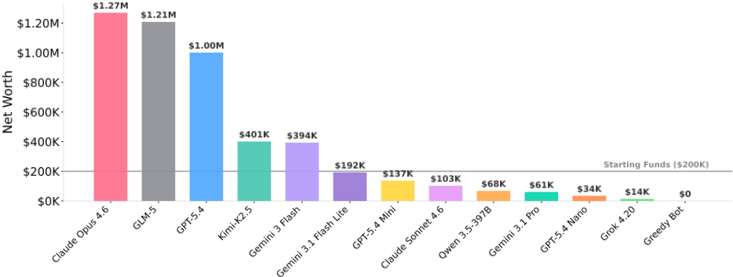
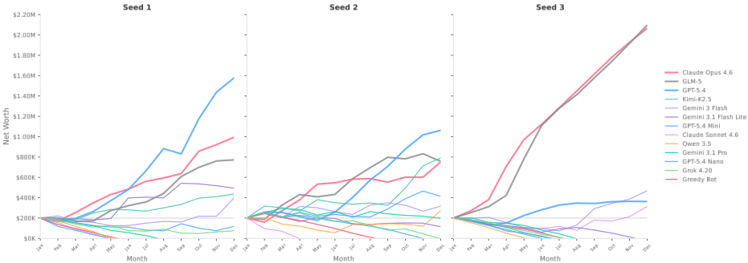
14
| Model | SP/100T | Inspect/Accept | Avg Conc. | Cmd/Turn |
|---|---|---|---|---|
| Claude Opus 4.6 | 5.6 | 1.1 | 2 | 1.41 |
| GLM-5 | 2.7 | 0.26 | 1.5 | 2.16 |
| GPT-5.4 | 10.6 | 1.43 | 2.5 | 2.63 |
| Kimi-K2.5 | 0.6 | 0 | 1.3 | 1.18 |
| Gemini 3 Flash | 0.2 | 0.11 | 1.2 | 0.24 |
| Gemini 3.1 Flash Lite | 0.9 | 0.02 | 1.2 | 2.16 |
| GPT-5.4 Mini | 0.2 | 0.22 | 1 | 0.04 |
| Claude Sonnet 4.6 | 4.6 | 0.64 | 7.2 | 2.01 |
| Qwen 3.5-397B | 0.7 | 0.01 | 2.5 | 1 |
| Gemini 3.1 Pro | 0 | 0 | 1.1 | 1.06 |
| GPT-5.4 Nano | 0 | 0.08 | 1.2 | 0.08 |
| Grok 4.20 Beta | 0.4 | 0.65 | 1.5 | 0.92 |
| Model | SP/100T | Inspect/Accept | Avg Conc. | Cmd/Turn |
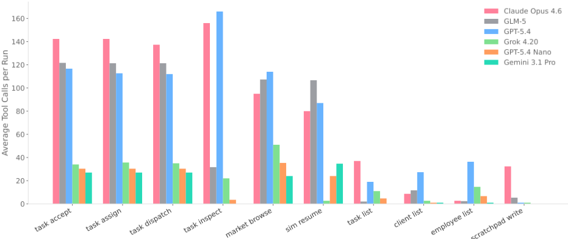
E Ablation: Context Window Size
我们在四个模型上改变保留对话轮次的数量 K ∈ {20, 30, 40, 50}，每个模型各使用三个随机种子（图 10）。四个模型中有三个在 K = 30 处达到峰值，其中 GPT-5.4 Mini 提升了 123%，Gemini 3 Flash 提升了 27%，随后在更大的取值下急剧退化。GPT-5.4 在默认的 K = 20 时表现最佳：在 K = 30 时，它每轮发出的命令更少，且始终未能学会将 accept-assign-dispatch 捆绑为单一动作，导致任务吞吐量下降超过 60%。所有四个模型在超过各自最优 K 后均出现退化，这表明更大的上下文窗口降低每轮动作效率的速度快于其提升决策质量的速度。
F Summary of Token Usage, Cost, and Time
表 4 总结了各模型的 API 成本、总 token 数量以及以分钟为单位的运行时间。
15
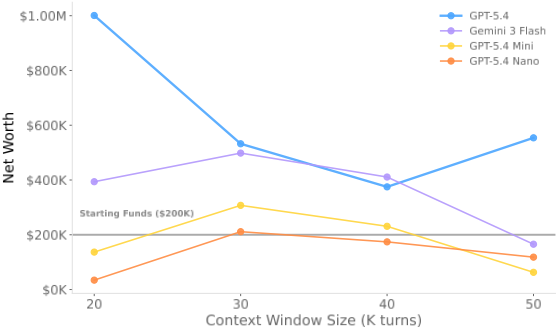
| Model | Bankrupt | Cost ($) | Tokens | Runtime (min) |
|---|---|---|---|---|
| Claude Opus 4.6 | 0/3 | 86.07 ± 41.17 | 16.7M | 70 ± 36 |
| GLM-5 | 0/3 | 7.62 ± 1.06 | 8.3M | 40 ± 7 |
| GPT-5.4 | 0/3 | 23.08 ± 7.07 | 9.5M | 19 ± 5 |
| Kimi-K2.5 | 1/3 | 1.79 ± 2.74 | 3.8M | 21 ± 30 |
| Gemini 3 Flash | 0/3 | 1.83 ± 0.32 | 3.8M | 6 ± 1 |
| Gemini 3.1 Flash Lite | 1/3 | 0.59 ± 0.22 | 2.6M | 6 ± 2 |
| GPT-5.4 Mini | 2/3 | 1.34 ± 1.83 | 1.8M | 3 ± 4 |
| Claude Sonnet 4.6 | 2/3 | 18.06 ± 18.87 | 5.8M | 23 ± 24 |
| Qwen 3.5-397B | 2/3 | 1.16 ± 0.79 | 2.8M | 13 ± 8 |
| Gemini 3.1 Pro | 2/3 | 7.36 ± 8.18 | 2.8M | 7 ± 6 |
| GPT-5.4 Nano | 2/3 | 0.41 ± 0.20 | 2.0M | 3 ± 1 |
| Grok 4.20 | 2/3 | 5.03 ± 2.40 | 2.9M | 4 ± 2 |
| Model | Bankrupt | Cost ($) | Tokens | Runtime (min) |
16